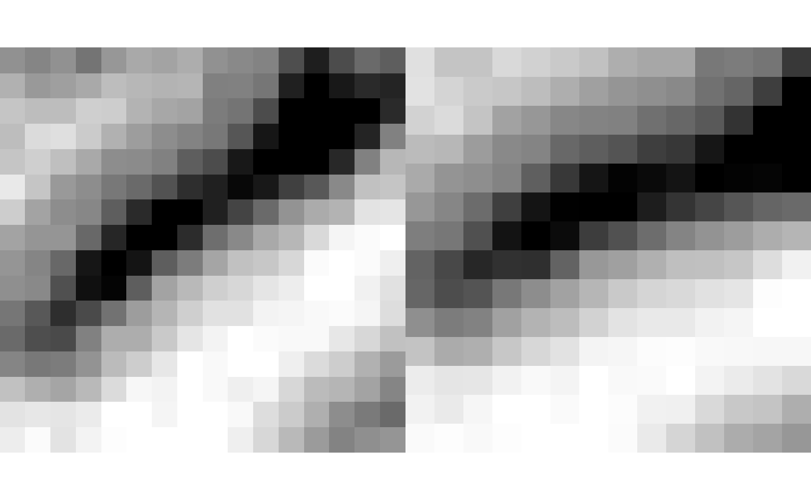
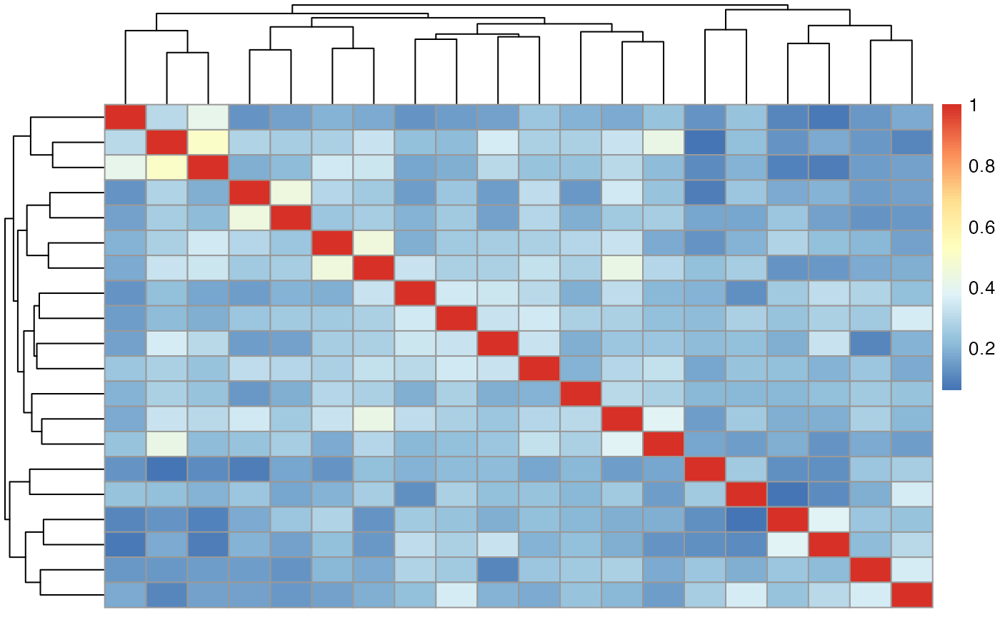

patchMatchR.Rmd“patch that hole.” (folk wisdom)
Introduction
Patch-based correspondence is ideal for finding partial matches between image pairs, for example, between pre and post-operative MRI. Depending on the selected features, the matching may be robust to occlusion, noise, scale and rotation. The patch-wise approach also makes the matching more robust to initialization in comparison to more traditional, gradient-based methods that assume that image pairs overlap (in physical space) at initialization and contain no more than a 30 degree rotational difference [@johnson2015itk]. Patch matching therefore provides a complementary set of tools in contrast to those provided by the majority of medical image registration tools.
This package, patchMatchR, provides an experimental framework for efficiently computing patch-based features and patch-based matches between image pairs. patchMatchR uses transformation and physical space definitions that are consistent with the Insight ToolKit (ITK) and Advanced Normalization Tools (ANTs). The input/output of images and transformation files can be used seamlessly between this package, ITKR and ANTsR.
The basic concepts include:
a “fixed” or “reference” image that defines the space to which we match;
a “moving” or “target” image that gets matched to the fixed space;
the moving to fixed transformation can be applied via
antsApplyTransformsor withapplyAntsrTransform*. Both point sets and images are valid objects that can be transformed.inverting the transform allows the fixed to be mapped to the moving space.
the patches over which we collect patch features are defined by masks.
the masks can be defined by random points or pre-defined reference points.
a reasonable set of points, for the brain, could be defined by the powers point set:
?powers_areal_mni_itk. the point set is defined in the MNI-ITK space.randomly distributed point sets are reasonable in that they are unbiased and will ultimately be filtered later on.
the methods should work effectively in 2D or 3D but additional testing is needed.
one advantage of the matched patches is that they can be stored in the original image space, i.e. as bounding boxes. this can be useful for applications such as super-resolution and/or image decomposition via PCA or related methods.
Many of the ideas in this work are inspired by traditional algorithms such as patch match [@barnes2009patchmatch] and SIFT [@lowe2004distinctive] and newer approaches such as google’s DELF [@noh2017large]. The latter is very similar to SIFT but uses deep features. As this is a new package, little guidance is currently available for parameter setting. However, the number of parameters is also relatively small and, as such, parameter exploration is encouraged.
Algorithms in patchMatchR
The functions/methods available within patchMatchR include:
patchMatch: High-level function for patch matching that makes many assumptions and therefore minimizes the number of parameters to choose. This prioritizes usability at the cost of optimality.matchedPatches: provides the matched patches given output ofpatchMatch. this is useful for visualizing the patch pairs.fitTransformToPairedPoints: will use either the Kabsch algorithm or a least squares fitting algorithm to match the pairs of points that the user provides.deepFeatures: High-level function for extracting features based on a pretrained network.deepPatchMatch: High-level function for deep patch matching that makes many assumptions and therefore minimizes the number of parameters.deepLocalPatchMatch: High-level function for deep patch matching that is locally constrained.RANSAC: Random sample consensus is an established method [@fischler1981random] for identifying a subset of points consistent with a rigid or affine transformation.
The feature extraction and matching methods above will be slower in three dimensions. As such, experimentation in 2D is encouraged.
Examples
Partial matching
Prepare the data. A brain slice and a version of that slice rotated and corrupted.
library( ANTsR )
img = ri( 1 )
cos45 = cos(pi*15/180)
sin45 = sin(pi*15/180)
txRotate <- createAntsrTransform( precision="float", type="AffineTransform", dim=2 )
setAntsrTransformParameters(txRotate, c(cos45,-sin45,sin45,cos45,0,0) )
setAntsrTransformFixedParameters(txRotate, c(128,128))
imgr = applyAntsrTransform(txRotate, img, img)
plot( img, imgr, colorbar = FALSE, alpha = 0.5 )
## NULLCorrupt the image.
makeNoise <- function( img, nzsd ) {
temp = makeImage( dim( img ), rnorm( prod( dim( img ) ), 128, nzsd ) )
antsCopyImageInfo( img, temp )
}
nz = makeNoise( img, 50 ) %>% smoothImage( 12 )
nzt = thresholdImage( nz, 127, Inf )
imgc = imgr * nzt
layout( matrix(1:2,nrow=1))
plot( img, colorbar = FALSE )## NULLplot( imgc, colorbar = FALSE )## NULLNow match the images.
imgmask = randomMask( getMask( img ), 100 ) # may need more points than this
mtch = patchMatch( imgc, img, imgmask, fixedPatchRadius = 7 )## ITK ExceptionObject caught !
##
## itk::ExceptionObject (0x7f8708d7df20)
## Location: "unknown"
## File: /Library/Frameworks/R.framework/Versions/3.6/Resources/library/ITKR/libs/include/ITK-5.1/itkImageBase.hxx
## Line: 178
## Description: itk::ERROR: Image(0x7f8708d7dc80): A spacing of 0 is not allowed: Spacing is [8.17857, 0]
##
##
## ITK ExceptionObject caught !
##
## itk::ExceptionObject (0x7f8708d83a20)
## Location: "unknown"
## File: /Library/Frameworks/R.framework/Versions/3.6/Resources/library/ITKR/libs/include/ITK-5.1/itkImageBase.hxx
## Line: 178
## Description: itk::ERROR: Image(0x7f8708d83780): A spacing of 0 is not allowed: Spacing is [8.17857, 0]
##
##
## ITK ExceptionObject caught !
##
## itk::ExceptionObject (0x7f872daadec0)
## Location: "unknown"
## File: /Library/Frameworks/R.framework/Versions/3.6/Resources/library/ITKR/libs/include/ITK-5.1/itkImageBase.hxx
## Line: 178
## Description: itk::ERROR: Image(0x7f872dae2680): A spacing of 0 is not allowed: Spacing is [8, 0]
##
##
## ITK ExceptionObject caught !
##
## itk::ExceptionObject (0x7f872dada060)
## Location: "unknown"
## File: /Library/Frameworks/R.framework/Versions/3.6/Resources/library/ITKR/libs/include/ITK-5.1/itkImageBase.hxx
## Line: 178
## Description: itk::ERROR: Image(0x7f872da5bdc0): A spacing of 0 is not allowed: Spacing is [8, 0]
##
##
## ITK ExceptionObject caught !
##
## itk::ExceptionObject (0x7f8708d51bd0)
## Location: "unknown"
## File: /Library/Frameworks/R.framework/Versions/3.6/Resources/library/ITKR/libs/include/ITK-5.1/itkImageBase.hxx
## Line: 178
## Description: itk::ERROR: Image(0x7f8708d51930): A spacing of 0 is not allowed: Spacing is [4.28571, 0]
##
##
## ITK ExceptionObject caught !
##
## itk::ExceptionObject (0x7f8708d55150)
## Location: "unknown"
## File: /Library/Frameworks/R.framework/Versions/3.6/Resources/library/ITKR/libs/include/ITK-5.1/itkImageBase.hxx
## Line: 178
## Description: itk::ERROR: Image(0x7f8708d54f10): A spacing of 0 is not allowed: Spacing is [4.28571, 0]
##
##
## ITK ExceptionObject caught !
##
## itk::ExceptionObject (0x7f8738cd1a10)
## Location: "unknown"
## File: /Library/Frameworks/R.framework/Versions/3.6/Resources/library/ITKR/libs/include/ITK-5.1/itkImageBase.hxx
## Line: 178
## Description: itk::ERROR: Image(0x7f8738cd16b0): A spacing of 0 is not allowed: Spacing is [4.14286, 0]
##
##
## ITK ExceptionObject caught !
##
## itk::ExceptionObject (0x7f8738cda600)
## Location: "unknown"
## File: /Library/Frameworks/R.framework/Versions/3.6/Resources/library/ITKR/libs/include/ITK-5.1/itkImageBase.hxx
## Line: 178
## Description: itk::ERROR: Image(0x7f8738cda0b0): A spacing of 0 is not allowed: Spacing is [4.14286, 0]myMatches = matchedPatches( imgc, img, mtch, fixedPatchRadius = 7, verbose=FALSE )
k = which.min( mtch$MI ) # mutual information
layout( matrix(1:2,nrow=1))
plot( myMatches$fixPatchList[[k]], colorbar=F, doCropping=F )## NULLplot( myMatches$movPatchList[[k]], colorbar=F, doCropping=F )
## NULLCompute the transformation using RANSAC - this implementation needs some work in terms of identifying optimal parameters or potentially through an automated parameter search that is internal to the method
# RANSAC(fixedPoints, movingPoints, transformType = "Affine",
# minNtoFit = 16, maxIterations = 20, errorThreshold = 1,
# goodProportion = 0.5, lambda = 1e-04, verbose = FALSE)
rrr <- RANSAC(
data.matrix(mtch[,c(3,4)]),
data.matrix(mtch[,c(7,8)]), transformType = 'Rigid',
minNtoFit = 8, maxIterations = 10000,
errorThreshold = 0.5, goodProportion = 0.05,
lambda = 1e-4, verbose = FALSE )
imgtx = applyAntsrTransformToImage( rrr$bestModel$transform, imgc, img )
antsImageMutualInformation( img, imgc )## [1] -1.222115## [1] -0.9956717## NULLplot( img, imgtx )
## NULLDeep features
Pre-trained deep convolutional networks provide rich feature spaces for image matching. Here, we show how to extract VGG19 features from medical images.
library( keras )
library( abind )
library( ANTsRNet )
img <- ri( 1 ) %>% iMath( "Normalize" )
mask = randomMask( getMask( img ), 20 )
features = deepFeatures( img, mask, patchSize = 32 )
pheatmap::pheatmap( abs( cor( t( features$features ) ) ) )
Deep feature matching
nP1 = 500
nP2 = 2000
psz = 32
img <- iMath( img, "Normalize" )
img2 <- iMath( imgc, "Normalize" )
mask = randomMask( getMask( img ), nP1 )
mask2 = randomMask( getMask( img2 ), nP2 )
blk = 21
blk = "block2_conv2"
matchO = deepPatchMatch( img2, img, mask, mask2,
movingPatchSize = psz, fixedPatchSize = psz, verbose = FALSE,
block_name = blk, switchMatchDirection = T ) # , knnSpatial = 32
mlm = matchedLandmarks( matchO, img, img2, rep(psz,img@dimension) )
wsel = which( !is.na( matchO$matches ) )
layout( matrix(1:2,nrow=1, byrow=T) )
ss=sample(wsel,1)
plot( as.antsImage( matchO$ffeatures$patches[ss,,] ) , colorbar=F, doCropping=F )## NULLsss = matchO$matches[ss]
plot( as.antsImage( matchO$mfeatures$patches[sss,,] ) , colorbar=F, doCropping=F )
## NULLnow follow up with a RANSAC
result <- RANSAC( mlm$fixedPoints, mlm$movingPoints, transformType = 'Rigid',
minNtoFit = 8, maxIterations = 10000,
errorThreshold = 0.5, goodProportion = 0.05,
lambda = 1e-4, verbose = FALSE )
# visualize
reg = applyAntsrTransformToImage( result$bestModel$transform, imgc, img )
layout( matrix(1:2,nrow=1, byrow=T) )
plot( img, colorbar = F )## NULLplot( reg, colorbar = F )
## NULLShow some matched points.
idim = img@dimension
k = sample(1:nrow( mlm$fixedPoints), 10, replace=F )
lmImage1 = makePointsImage(
matrix(mlm$fixedPoints[k,],ncol=idim), img, radius = 7 )
lmImage2 = makePointsImage(
matrix(mlm$movingPoints[k,],ncol=idim), img2, radius = 7 )
layout( matrix(1:2,nrow=1) )
plot( img*222, lmImage1, doCropping=F )## NULLplot( img2*222, lmImage2, doCropping=F )
## NULLSummary
We certainly expect some bugs or usability issues to arise and these can only be improved if we get feedback and/or suggestions from those who have interest in these methods. Enjoy and please refer issues or suggestions to patchMatchR issues.